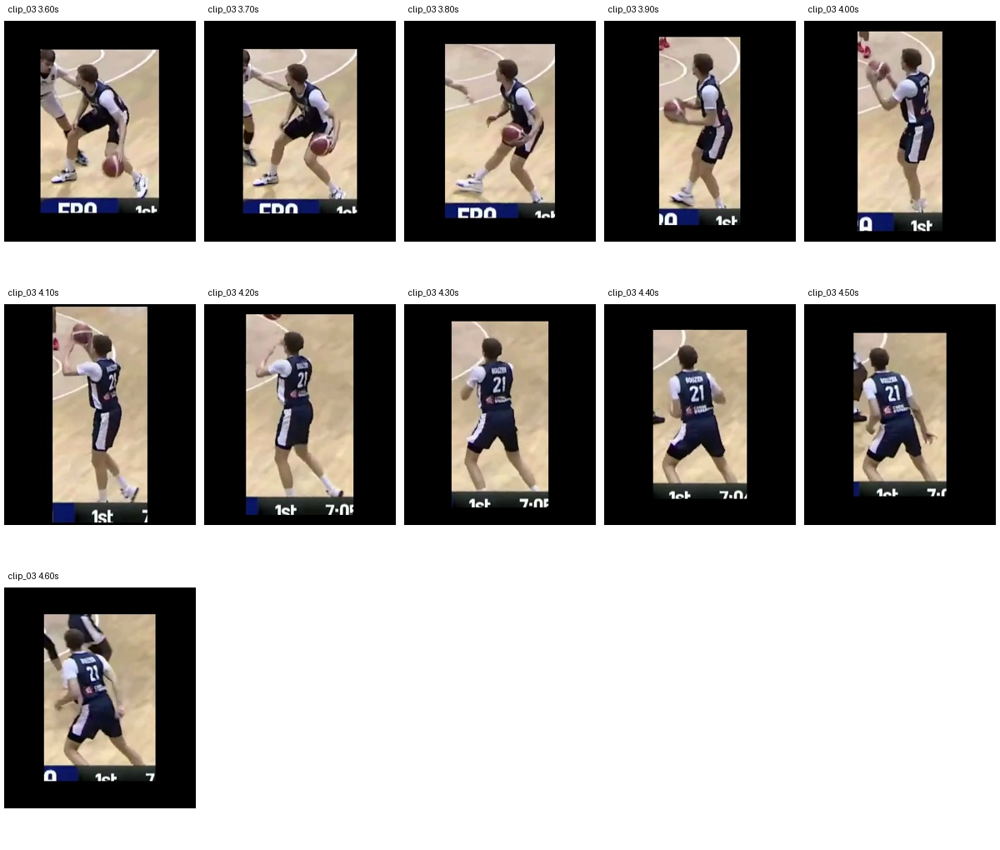

A data pipeline for robot learning
Turning motion in video into learning data with traceable sources and reviewable quality.
 Research project
Research projectSee the pipeline in motion.
One player · The same 6 seconds · Actual model outputs
Person crop and reconstruction, side by side
Left: the selected player’s crop. Right: the actual HMR 2.0 mesh overlaid on the same frame. Switching stages preserves the playback position.
Footage: FIBA Basketball · Slovenia v France, U20 EuroBasket 2024 15:35–15:41 · 60 FPS · ID 9 / #21
From video to motion data
Select a stage above to inspect its output- Source videoPreserve source time and FPS
- Person trackingViTDet-H + HMR 2.0 features → PHALP association
- Person cropsManual person/segment selection · 10% margins per side
- 3D reconstructionRerun HMR 2.0 on crops → save SMPL
- Replay & reviewReplay saved vertices in MuJoCo · review against footage
The video above replays saved SMPL meshes with a fixed root. Captioning comparisons and G1 physics pilots are presented separately below; full-body tracking and end-to-end automation remain unresolved.
Scope & my contribution
AIV Lab / ETRI research project
- My contribution
- Led the overall pipeline design and implementation, including model integration, experiments, and output review
- Reconstruction study
- 4,240 frames · 6 player-specific segments
- Design research
- 7 models · 210 grounding responses compared
- Status
- Data construction, caption comparisons and robot-tracking pilots
- Technologies
- PythonPyTorchPHALPHMR 2.0SMPL
Project overview
A pipeline for connecting motion in video to robot learning.
- Source video & timeThe reference for every output
- Person ID & selected intervalReview gaps and identity changes
- Crop, 3D motion & captionCompare outputs from the same interval
For an ETRI research project, I led the design and implementation of a pipeline connecting person tracking, person crops, 3D motion reconstruction and review. I integrated pretrained models and made outputs traceable to a person and moment in the source video.
The current scope covers data construction for selected segments, action-caption comparisons and G1 physics pilots. The two central challenges were preserving correspondence across outputs and evaluating whether reconstructed motion could be physically executed.
Challenge 1 · Data consistency
How can outputs from different models refer to the same person and moment?
- The challenge
- A broad action interval or a changed track ID can produce plausible crops, meshes and captions that refer to different moments or people. A successful downstream output can hide an upstream mismatch.
- Why this approach
- I chose to anchor outputs to source time and person ID and retain intermediate results for comparison. Producing an output and approving it as usable data became separate checks.
What I did
I first compared 210 responses across seven models, five frame rates, two videos and three queries. Higher FPS still left missed actions and overly broad intervals, so grounding output required review before downstream use.
PHALP associates full-frame ViTDet-H detections and HMR 2.0 estimates into person tracks. I selected reviewed players and continuous intervals, added a 10% margin on each box edge, and reran HMR 2.0 on the crops.
I stored source times, frame numbers, IDs and crop coordinates with the SMPL outputs, checking frame counts and FPS across stages. This made unusual meshes traceable to their inputs. In a separate performance-video review, I distinguished temporary gaps from wrong-person associations and defined exclusion and hold criteria.
Crops, SMPL parameters and meshes are linked across six selected intervals from five players. This video replays saved meshes with a fixed root; it does not demonstrate robot balance control.
A fluent caption could still give the ball to the wrong player.

To attach action descriptions to reviewed motion, I compared three prompt conditions for Qwen and InternVL using the same six RGB crops at 4 FPS. I kept input frames and model versions fixed and retained all 36 requests and responses.
Even explicit action prompts could describe an off-ball player as dribbling or omit the late ball release. I evaluated richer wording separately from more accurate action descriptions.
The comparison is complete, but reliable automatic action labels remain unresolved. Selecting a final prompt did not establish that it was the most accurate.
I learned to validate correspondence between outputs as well as successful model execution. Preserving the source, person ID and time made it possible to trace an error back to its stage and correct or exclude the segment.
Challenge 2 · Physical feasibility
Can a robot follow the reconstructed motion in physics simulation?
- The challenge
- The mesh could be replayed, but full-body tracking on G1 failed through falls. Converting joint representations did not by itself satisfy contact, balance and dynamics constraints.
- Why this approach
- After inspecting initial conditions and contacts, I evaluated full-body and arm-focused tasks separately. Restricting the task helped identify conditions under which tracking was feasible.
What I did
I mapped the saved SMPL motion to G1’s 29 joints with GMR and tested tracking in physics simulation. I examined initial pose, velocity and foot contact, then compared start-time changes, removal of initial velocity, contact correction and additional PPO training.
Full-body tracking still failed in all ten evaluations after contact correction and 2,000 training iterations. To narrow the failure, I tested an arm-focused task with standing targets for the lower body and waist. That restricted task passed all ten initial-perturbation trials on the same short motion.
Joint conversion, policy training and evaluation were executed. The restricted arm-tracking result is separate from the unresolved full-body task; ball interaction and deployment to a physical robot were not tested.
Reconstructed motion was not automatically executable motion. I learned to validate data format, kinematic replay and physical tracking separately, and to isolate failures with a narrower task.
Results & learning
A pipeline with explicit checks at each stage.
The work produced both integrated model runners and a structure for tracing errors to the source and deciding which intervals to retain. AI coding tools supported implementation, experiments, review and documentation; the work does not claim new pretrained models or fine-tuning.
The remaining work is joint quality approval for identity, captions and motion, plus stable full-body tracking. The current research covers selected-interval data construction and independent pilots, not an automatic end-to-end system from arbitrary video to robot learning.
Code & evidence
The implementation and the evidence behind it.
Python / PyTorch / ViTDet-H / PHALP / HMR 2.0 / SMPL / MuJoCo
Reviewed 3 November 2026 · Personal contributions, team outcomes, completed experiments, and ongoing research are distinguished.